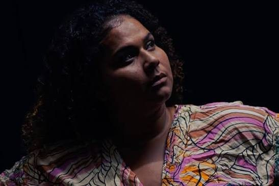
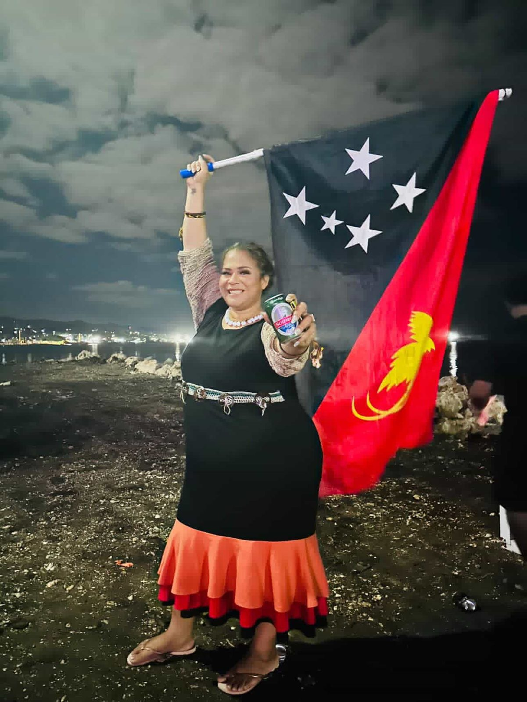
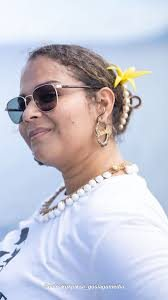
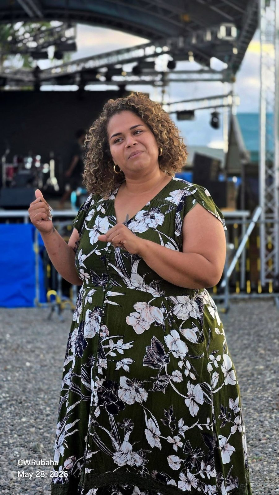
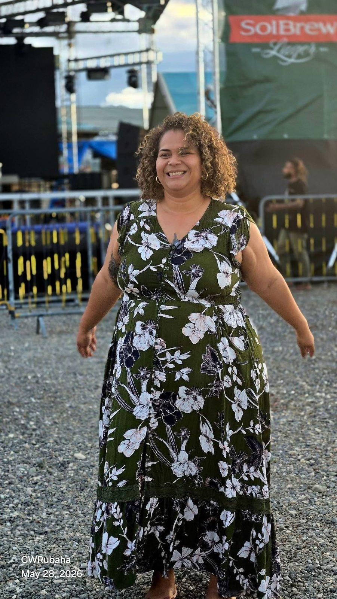
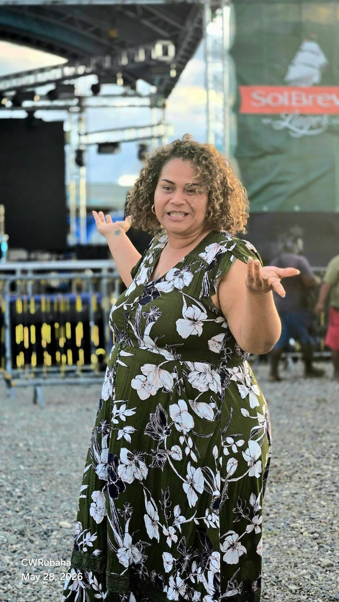
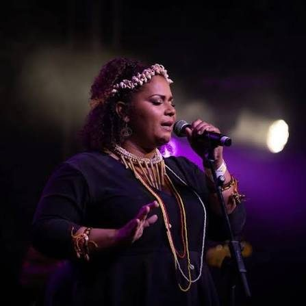

Meet Danielle
Danielle is an award-winning Papua New Guinean singer-songwriter and international performer. She made history as the first female winner of ABC Pacific Break in 2022. Her work connects contemporary musical expression with the cultural sounds, stories and spirit of Papua New Guinea.
From Papua New Guinea to international stages, Danielle celebrates Pacific identity through music. Her performance journey includes WOMADelaide, WOMAD New Zealand and international music industry showcases.

Music & videos
Island Roots. Global Stages.
ABC Pacific Break · 2022
First female winner of the regional music competition.
PNG FM · 2023
Female Artist of the Year.
WOMADelaide · 2023
International festival performance in Australia.
WOMAD New Zealand · 2025
Taking Pacific music to a global festival audience.
Press & recognition
Behind the music






Connect with Danielle
Music, performances, artist news and booking enquiries through official social channels.